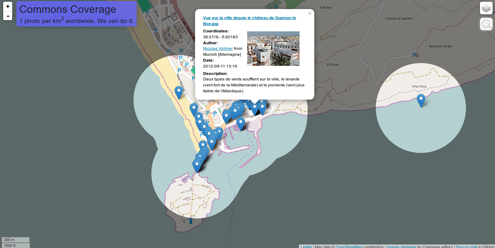
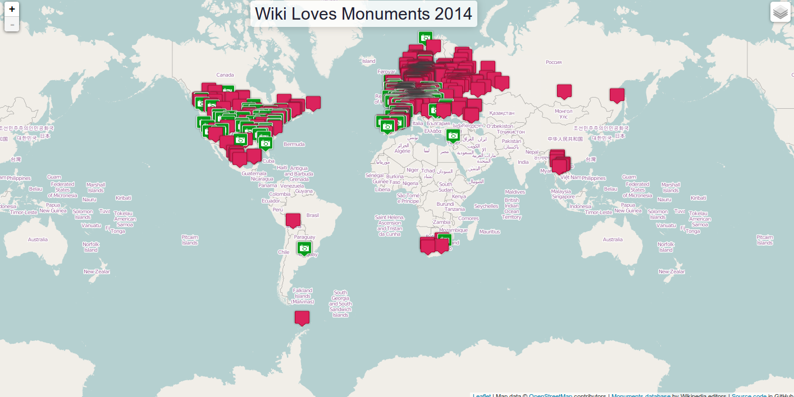
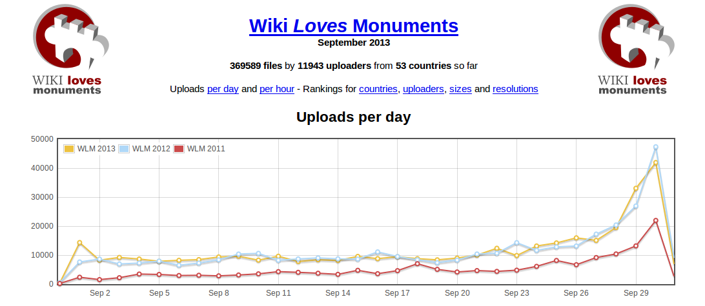
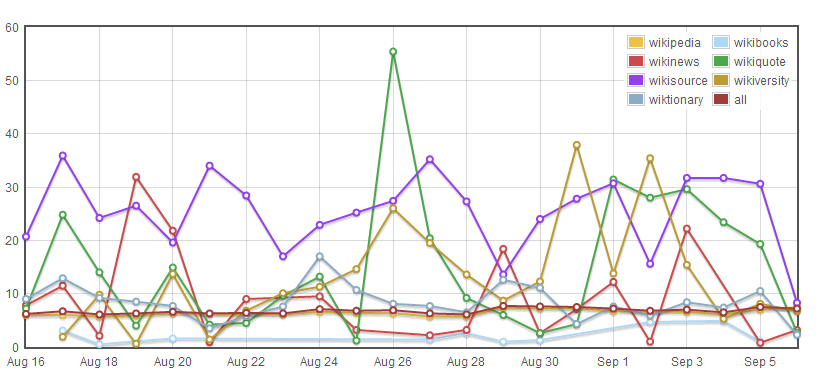
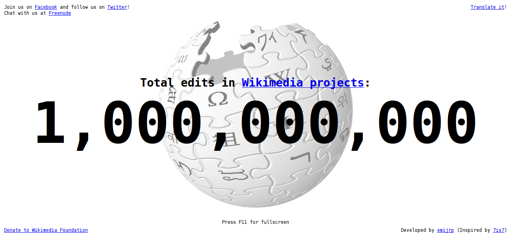

Software - La web de emijrp
Escribo mi propio software para multitud de tareas, para ello utilizo sobre todo el lenguaje de programación Python. A continuación encontrarás una descripción de mis proyectos y enlaces a los repositorios con el código fuente.
| Tabla de contenidos |
|---|
|
1. Mi software destacado 2. Repositorios en GitHub 3. Repositorios en Google Code 4. Repositorios en Rediris |
Mi software destacado
Desde que me registré en Wikipedia en 2005 he contribuido asiduamente a esta enciclopedia y también a otros wikis menos conocidos. Estos wikis tienen una importante función en la recopilación, preservación y difusión del conocimiento, de modo que procuro dedicar parte de mi tiempo a ellos. La mayoría de mis proyectos destacados tienen que ver con los wikis.
| Software | Repositorio | Descripción | Imagen |
|---|---|---|---|
| AVBOT | GitHub | AVBOT es un bot anti-vandalismo para wikis MediaWiki. Está desarrollado en Python y utiliza el framework pywikibot. AVBOT ha estado funcionando en Wikipedia en español desde 2008, donde ha revertido más de 250.000 vandalismos. También existen varios clones controlados por otros usuarios. En 2009, el proyecto fue galardonado con el Premio Nacional al "Mejor proyecto comunitario" en el III Concurso Universitario de Software Libre. | |
| Commons Coverage | GitHub | Mapa que muestra todas las imágenes geolocalizadas de Wikimedia Commons sobre un mapamundi. Cuando hay una fotografía en cualquier zona, se ilumina un círculo de 1 km a la redonda, indicando que esa parte ya "se considera" explorada. El resto del mundo aparece sombreado. De esta forma se invita a mejorar la cobertura de imágenes disponibles en Wikipedia hasta que quizás un día haya una imagen de cada kilómetro cuadrado del planeta. |  |
| Images for bio | GitHub | Herramienta que recopila biografías que carecían de imagen y busca en otras Wikipedias si existe imagen de esa persona. El resultado es un listado de páginas a las que se les puede añadir las imágenes fácilmente mediante un clic. Se encuentra fuera de funcionamiento al haber aparecido proyectos como Wikidata. | |
| WLM maps | GitHub | Mapa que muestra todos los monumentos para los que se conoce sus coordenadas, indicando si éste dispone de imagen en Wikipedia o no. De esta forma permite encontrar monumentos a los que todavía hay que hacerle fotografías para ilustrar sus artículos en la enciclopedia. Se utiliza para el mayor concurso fotográfico del mundo, Wiki Loves Monuments. |  |
| WLM stats | GitHub | Genera gráficas y estadísticas de las imágenes y vídeos subidos durante las distintas ediciones del concurso fotográfico Wiki Loves Monuments. También ofrece un fichero con los metadatos recopilados de todas las imágenes subidas, de esta forma otros usuarios pueden crear sus estadísticas fácilmente. |  |
| wmcharts | GitHub | Es una colección de gráficas sobre distintos aspectos y métricas de los proyectos Wikimedia, por ejemplo la actividad de los cambios recientes, páginas nuevas, borrados, bloqueos a usuarios, protecciones de páginas, subidas de ficheros, ediciones revertidas y más. |  |
| wmcounter | GitHub | Es un contador que muestra el total de ediciones que se han hecho a Wikipedia y sus proyectos hermanos desde que se fundaron en el año 2001. Va creciendo a cada instante por lo que puede verse en vivo como la gente aporta a Wikipedia. A veces el ritmo alcanza las 10 ediciones/segundo o más. La edición número 1.000.000.000 (mil millones) tuvo lugar el 16 de abril de 2010. |  |
{kind=link}
{kind=link}
{kind=link}
{kind=link}
{kind=link}
Repositorios en GitHub
Estos son mis repositorios en GitHub, un portal para compartir código fuente utilizando el programa de control de versiones Git.
Cuando en la columna fork pone "No" (por ejemplo en AVBOT), significa que yo soy el autor original del repositorio y del código fuente. Cuando pone "Sí" (por ejemplo en Apollo-11), significa que hice un fork (bifurcación) del código fuente de otra persona con la intención de aportar algo en el futuro o simplemente como copia de seguridad.
| # | Nombre | Estado | ¿Fork? | Lenguaje | Tamaño | Forks | Descripción | Estrellas |
|---|---|---|---|---|---|---|---|---|
| 1 | 806.4616.0110 | Público | No | None | 14 | 0 | None | 0 |
| 2 | Amstrad-PC1512 | Público | No | None | 14 | 0 | None | 0 |
| 3 | avbot | Público | No | Python | 3846 | 1 | Anti-vandalism bot for MediaWiki wikis | 1 |
| 4 | awesome-awesome | Público | No | None | 44 | 101 | A curated list of awesome curated lists of many topics. | 797 |
| 5 | awesome-movies | Público | No | None | 184 | 0 | A curated list of awesome movies | 2 |
| 6 | awesome-northkorea | Público | No | None | 216 | 0 | A curated list of awesome North Korea resources | 1 |
| 7 | awesome-nostalgia | Público | No | None | 124 | 0 | A curated list of awesome nostalgia resources. | 3 |
| 8 | awesome-opendata | Público | No | None | 128 | 0 | A curated list of awesome opendata repositories. | 5 |
| 9 | awesome-wikipedia | Público | No | None | 153 | 1 | A curated list of awesome Wikipedia-related frameworks, libraries, software, datasets and references. | 30 |
| 10 | baja-blogs | Público | No | Shell | 15 | 0 | Scripts para bajar blogs | 1 |
| 11 | caja-ujce-downloader | Público | No | Python | 1060 | 0 | Scripts for downloading La Caja de Herramientas de la UJCE | 1 |
| 12 | commons-coverage | Público | No | JavaScript | 456 | 0 | A map for Wikimedia Commons coverage | 3 |
| 13 | currentevents | Público | No | Python | 64 | 1 | Some scripts and metadata about current events articles in Wikipedia | 2 |
| 14 | emijrp | Público | No | Python | 3235 | 1 | Automatically exported from code.google.com/p/emijrp | 1 |
| 15 | emijrp.github.io | Público | No | HTML | 31589 | 0 | Personal website | 1 |
| 16 | enciclopedia-biografias-web | Público | No | HTML | 0 | 0 | Sección de biografías de la enciclopedia | 0 |
| 17 | enciclopedia-web | Público | No | HTML | 0 | 0 | Enciclopedia generalista basada en Wikipedia | 1 |
| 18 | fondos-web | Público | No | HTML | 1046 | 0 | Fondos de pantalla libres | 1 |
| 19 | gitorious | Público | No | HTML | 1568 | 0 | List of Gitorious repositories | 1 |
| 20 | haselismo | Público | No | Python | 15 | 0 | Frases aleatorias del poeta y rapero Pablo Hasel | 1 |
| 21 | imagesforbio | Público | No | None | 0 | 0 | Recommender system of images for Wikipedia biography articles | 1 |
| 22 | internet-archive | Público | No | Python | 14 | 0 | Scripts for Internet Archive | 1 |
| 23 | itdied.com | Público | No | None | 297 | 0 | Mirror of ItDied.com | 1 |
| 24 | jamendo-downloader | Público | No | Python | 148 | 0 | Script to download Jamendo albums | 1 |
| 25 | latex2wiki | Público | No | Python | 140 | 0 | Automatically exported from code.google.com/p/latex2wiki | 0 |
| 26 | librefind | Público | No | Python | 87 | 0 | Wiki search engine with results sorted by community consensus | 1 |
| 27 | locapedia.wikis.cc | Público | No | Python | 989 | 0 | Scripts para locapedias | 1 |
| 28 | madripedia.wikis.cc | Público | No | Python | 19 | 0 | Scripts para Madripedia | 1 |
| 29 | manifiesto-del-partido-comunista | Público | No | None | 164 | 0 | Manifiesto del Partido Comunista | 2 |
| 30 | neptuno-web | Público | No | None | 14 | 0 | None | 0 |
| 31 | statmediawiki | Público | No | Python | 3432 | 0 | Statistics for MediaWiki wikis | 1 |
| 32 | time-machine | Público | No | Python | 15 | 0 | First open-source time machine | 1 |
| 33 | trece-rosas | Público | No | None | 14 | 0 | None | 1 |
| 34 | vejer-web | Público | No | JavaScript | 217 | 0 | Web turística sobre Vejer de la Frontera | 1 |
| 35 | wikanda | Público | No | Python | 27 | 0 | Scripts para los wikis de Wikanda | 1 |
| 36 | wiki2html | Público | No | Python | 19 | 0 | Convert wiki markup into HTML pages | 1 |
| 37 | wikidata | Público | No | Python | 512 | 8 | Scripts for Wikidata | 2 |
| 38 | wikidumps | Público | No | None | 50106 | 0 | Database dumps for several wikis | 1 |
| 39 | wikievidens | Público | No | Python | 1212 | 0 | Automatically exported from code.google.com/p/wikievidens | 1 |
| 40 | wikiindex | Público | No | Python | 152 | 0 | Scripts and bots for WikiIndex wiki | 1 |
| 41 | wikimania | Público | No | PHP | 240 | 0 | Mashup for Wikimania events | 1 |
| 42 | wikimemoria | Público | No | Python | 269 | 0 | Enciclopedia de la Memoria Histórica | 1 |
| 43 | wikipedia-red-links | Público | No | Python | 22 | 1 | Wikipedia red links | 1 |
| 44 | wikipedia-scripts | Público | No | None | 0 | 0 | Some scripts and bots for Wikipedia | 1 |
| 45 | wikiradio | Público | No | PHP | 211 | 1 | A radio for Wikimedia Commons audio files | 9 |
| 46 | wikis-web | Público | No | JavaScript | 614 | 0 | Directorio de wikis en español | 1 |
| 47 | wikis.cc | Público | No | Python | 15 | 0 | Scripts para wikis de Wikis.cc | 1 |
| 48 | wikistatistics-mediawiki-extension | Público | No | JavaScript | 248 | 0 | A MediaWiki extension for basic statistics | 1 |
| 49 | wikitweets | Público | No | Python | 395 | 0 | A collection of Twitter bots about Wikipedia, Wikimedia Commons and other wikis | 3 |
| 50 | wisor | Público | No | Python | 264 | 0 | Automatically exported from code.google.com/p/wisor | 0 |
| 51 | wlm-2011-dataset | Público | No | Python | 5656 | 0 | Automatically exported from code.google.com/p/wlm-2011-dataset | 0 |
| 52 | wlm-maps | Público | No | JavaScript | 2046 | 4 | A map for the Wiki Loves Monuments photograph contest | 9 |
| 53 | wlm-stats | Público | No | PHP | 88002 | 4 | Statistics and graphs about the Wiki Loves Monuments photograph contest | 3 |
| 54 | wmcharts | Público | No | JavaScript | 269 | 2 | A collection of charts about Wikimedia projects. | 2 |
| 55 | wmcounter | Público | No | JavaScript | 358 | 2 | A near real-time counter for all Wikimedia projects together | 4 |
| 56 | wmflabs | Público | No | Python | 152 | 1 | Some basic scripts for the Wikimedia Labs | 1 |
| 57 | www.marxists.org | Público | No | HTML | 204 | 0 | Mirror of https://www.marxists.org | 1 |
| 58 | Apollo-11 | Público | Sí | Assembly | 945 | 0 | Original Apollo 11 Guidance Computer (AGC) source code for the command and lunar modules. | 0 |
| 59 | ArchiveBot | Público | Sí | Python | 2026 | 0 | ArchiveBot, an IRC bot for archiving websites | 0 |
| 60 | Balchivist | Público | Sí | Python | 184 | 0 | Python library for archiving datasets | 0 |
| 61 | ChatterBot | Público | Sí | Python | 2244 | 0 | ChatterBot is a machine learning, conversational dialog engine. | 0 |
| 62 | FlickrFckr | Público | Sí | Shell | 85 | 0 | None | 0 |
| 63 | Font-Awesome | Público | Sí | HTML | 34873 | 0 | The iconic font and CSS toolkit | 0 |
| 64 | IA.BAK | Público | Sí | Shell | 39798 | 0 | We back up a lot of stuff from around the web; now it's time to back up the Internet Archive, just in case. | 0 |
| 65 | Leaflet-MiniMap | Público | Sí | HTML | 568 | 0 | A minimap control plugin for Leaflet | 0 |
| 66 | Peachy | Público | Sí | PHP | 1786 | 0 | The official MediaWiki PHP bot framework. Current Version: 2.0 alpha 8 | 0 |
| 67 | Perpetual-Wiki | Público | Sí | Python | 100 | 0 | Perpetually Archive Wikipedia | 0 |
| 68 | SatTrack | Público | Sí | Python | 11281 | 0 | Real time satellite tracking with antennas. | 0 |
| 69 | SimpleCV | Público | Sí | Python | 204103 | 0 | The Open Source Framework for Machine Vision | 0 |
| 70 | StarCraft | Público | Sí | JavaScript | 44883 | 0 | HTML5 version for StarCraft game | 0 |
| 71 | VideoBot | Público | Sí | Python | 53 | 0 | Specialised bot for periodical grabs and video/audio/etc. webpage scrapes. | 0 |
| 72 | WikiApiary | Público | Sí | Python | 1222 | 0 | Celery-based task workers for collecting and updating data on WikiApiary. | 0 |
| 73 | alyxm.github.io | Público | Sí | HTML | 50431 | 0 | None | 0 |
| 74 | archivelab.org | Público | Sí | HTML | 1624 | 0 | Internet Archive Labs home page | 0 |
| 75 | awesome | Público | Sí | None | 998 | 0 | :sunglasses: Curated list of awesome lists | 0 |
| 76 | awesome-d | Público | Sí | None | 115 | 0 | A curated list of awesome D documents, frameworks, libraries and software. Inspired by awesome-python. | 0 |
| 77 | awesome-elixir | Público | Sí | None | 127 | 0 | A curated list of amazingly awesome Elixir libraries, resources and shiny things. | 0 |
| 78 | awesome-javascript | Público | Sí | None | 292 | 0 | A collection of awesome browser-side JavaScript libraries, resources and shiny things. | 0 |
| 79 | awesome-machine-learning | Público | Sí | Python | 935 | 0 | A curated list of awesome Machine Learning frameworks, libraries and software. | 0 |
| 80 | awesome-nodejs | Público | Sí | None | 155 | 0 | A curated list of astonishing Node.js frameworks, libraries and resources. Inspired by awesome-php and awesome-python. | 0 |
| 81 | awesome-perl | Público | Sí | None | 113 | 0 | A curated list of awesome Perl frameworks and libraries. Come on Pull Requests! | 0 |
| 82 | awesome-public-datasets | Público | Sí | None | 240 | 0 | An awesome list of high-quality datasets in public domains (on-going). | 1 |
| 83 | awesome-python | Público | Sí | Python | 1437 | 0 | A curated list of awesome Python frameworks, libraries and resources. Inspired by awesome-php. | 0 |
| 84 | awesome-shell | Público | Sí | None | 116 | 0 | A curated list of awesome command-line frameworks, toolkits, guides and gizmos. Inspired by awesome-php. | 0 |
| 85 | backup-all-my-flickr-photos | Público | Sí | Python | 7 | 0 | Script to download all your Flickr photos and videos | 0 |
| 86 | book-catalogue | Público | Sí | Shell | 3376 | 0 | The books I own | 0 |
| 87 | books.archivelab.org | Público | Sí | Python | 27 | 0 | Full-text search Internet Archive's library of thousands of Greek & Roman classics | 0 |
| 88 | catalogue-lumiere | Público | Sí | None | 440 | 0 | a complete catalogue of all films produced by the Lumière company between 1895 and 1905. | 1 |
| 89 | cdnjs | Público | Sí | None | 946203 | 0 | Our goal is to operate this CDN in a peer reviewed fashion. | 0 |
| 90 | cities | Público | Sí | None | 348376 | 0 | Poly files for cities, which can be used to create OSM files out of larger regions | 0 |
| 91 | collection | Público | Sí | None | 7502 | 0 | The Museum of Modern Art (MoMA) collection data | 0 |
| 92 | collection-1 | Público | Sí | Python | 224279 | 0 | Tate Collection metadata | 0 |
| 93 | croawl | Público | Sí | Python | 38 | 0 | Crawler for open repositories with Dublin Core meta tags. | 0 |
| 94 | curations | Público | Sí | None | 7 | 0 | Curations of extraordinary Internet Archive items, for public good. | 0 |
| 95 | datasets | Público | Sí | None | 2284 | 0 | None | 1 |
| 96 | dbpedia | Público | Sí | PHP | 103920 | 0 | Various tools for the DBpedia project - This does NOT contain the DBpedia extaction framework | 0 |
| 97 | endangered-languages | Público | Sí | TeX | 868 | 0 | Resources for conservation, development, and documentation of endangered, minority, and low or under-resourced human languages. | 0 |
| 98 | extraction-framework | Público | Sí | Web Ontology Language | 60706 | 0 | The software used to extract structured data from Wikipedia | 0 |
| 99 | fact-join | Público | Sí | Python | 18 | 0 | Combine two wikipedia pages to make new facts. Tweets @brand_new_facts | 0 |
| 100 | filmaffinity2IMDB | Público | Sí | Python | 119 | 0 | Get filmaffinity voted movies, save them to CSV and post them on IMDB | 0 |
| 101 | flickrapi | Público | Sí | Python | 1588 | 0 | Python Flickr API implementation | 0 |
| 102 | flickrmirrorer | Público | Sí | Python | 140 | 0 | A small command-line python script that creates a local backup of your Flickr data. It mirrors images, titles, description, tags, albums and collections. | 0 |
| 103 | free-programming-books | Público | Sí | None | 5455 | 0 | :books: Freely available programming books | 0 |
| 104 | freenode-feminism.github.io | Público | Sí | CSS | 735 | 0 | None | 0 |
| 105 | freeyourstuff.cc | Público | Sí | JavaScript | 1173 | 0 | freeyourstuff.cc - universal content liberation | 0 |
| 106 | git | Público | Sí | C | 2014380 | 0 | Git Source Code Mirror - This is a publish-only repository and all pull requests are ignored. Please follow Documentation/SubmittingPatches procedure for any of your improvements. | 0 |
| 107 | github-backup | Público | Sí | Haskell | 627 | 0 | backs up everything github knows about a repository, to the repository | 0 |
| 108 | githubarchive.org | Público | Sí | Ruby | 445 | 0 | GitHub Archive is a project to record the public GitHub timeline, archive it, and make it easily accessible for further analysis. | 0 |
| 109 | graph-books | Público | Sí | Python | 476 | 0 | A graph representation of my library | 0 |
| 110 | groovebox.org | Público | Sí | CSS | 151 | 0 | Spotify clone for the Internet Archive's Music Library | 0 |
| 111 | gutenberg | Público | Sí | JavaScript | 4463 | 0 | Scraper for downloading the entire ebooks repository of project Gutenberg | 0 |
| 112 | https-everywhere | Público | Sí | JavaScript | 87587 | 0 | The official Github mirror of the HTTPS Everywhere repository at https://gitweb.torproject.org/https-everywhere.git. You can send pull requests here. | 0 |
| 113 | iamine | Público | Sí | Python | 88 | 0 | Internet Archive Data Mining Tools | 0 |
| 114 | iiif.archivelab.org | Público | Sí | JavaScript | 84552 | 0 | Internet Archive IIIF Image 2.0 Server | 0 |
| 115 | imagedirectory | Público | Sí | Python | 210142 | 0 | Manifests of the public domain images uploaded to Flickr Commons, with descriptive information about the books they were taken from. | 0 |
| 116 | imslp-scrape | Público | Sí | Python | 1228 | 0 | Scraping Library for http://imslp.org/wiki/Main_Page | 0 |
| 117 | internetarchive | Público | Sí | Python | 1226 | 0 | A Python and Command-Line Interface to Archive.org | 0 |
| 118 | ipfs | Público | Sí | None | 2097 | 0 | IPFS - The Permanent Web | 0 |
| 119 | json-sempai | Público | Sí | Python | 37 | 0 | Use JSON files as if they are python modules | 0 |
| 120 | kiwix | Público | Sí | C++ | 159491 | 0 | None | 0 |
| 121 | lais-audiovisual | Público | Sí | JavaScript | 213168 | 0 | Aplicación web para administrar y poner en acceso las fichas de catalogación de los documentales del LAIS | 0 |
| 122 | language-codes | Público | Sí | Shell | 243 | 0 | ISO Language Codes (639-1 and 639-2) | 0 |
| 123 | leaflet-geoip | Público | Sí | JavaScript | 29 | 0 | GeoIP Plugin for Leaflet.js | 0 |
| 124 | levitation | Público | Sí | Python | 174 | 0 | Tools to convert Wikipedia dumps into Git repositories. | 0 |
| 125 | linux | Público | Sí | C | 2201928 | 0 | Linux kernel source tree | 0 |
| 126 | listen-to-wikipedia | Público | Sí | JavaScript | 14582 | 0 | Live, generative music from Wikipedia edits | 0 |
| 127 | localwiki | Público | Sí | None | 34775 | 0 | LocalWiki a grassroots effort to collect, share and open the world's local knowledge. | 0 |
| 128 | mediawiki | Público | Sí | PHP | 718143 | 0 | The collaborative editing software that runs Wikipedia. This is a mirror from https://gerrit.wikimedia.org. See https://www.mediawiki.org/wiki/Developer_access for contributing. | 0 |
| 129 | mediawiki-extensions | Público | Sí | Python | 230408 | 0 | Github mirror of all MediaWiki extensions - our actual code is hosted with Gerrit (please see https://www.mediawiki.org/wiki/Developer_access for contributing) | 0 |
| 130 | mindmapit | Público | Sí | JavaScript | 976 | 0 | Simple web tool to create mindmaps | 0 |
| 131 | mwoffliner | Público | Sí | JavaScript | 713 | 0 | None | 0 |
| 132 | nomesevoces_viz | Público | Sí | JavaScript | 4248 | 0 | Visualización de los datos del proyecto nomesevoces.net | 0 |
| 133 | opencv | Público | Sí | C++ | 1061154 | 0 | Open Source Computer Vision Library | 0 |
| 134 | openlibrary | Público | Sí | Python | 38892 | 0 | One webpage for every book ever published! | 0 |
| 135 | openwayback | Público | Sí | Java | 45185 | 0 | The OpenWayback Development | 0 |
| 136 | ores | Público | Sí | Python | 6285 | 0 | A hosting service for 'revscoring' models. | 0 |
| 137 | pablog-scripts | Público | Sí | Python | 301 | 0 | Misc personal scripts | 0 |
| 138 | pdfminer | Público | Sí | Python | 12529 | 0 | Python PDF Parser | 0 |
| 139 | pipar | Público | Sí | Ruby | 104896 | 0 | Open Data scrapper of political parties registries. Currently only for Ministry of Interior of Spain registry. Open to other countries! | 0 |
| 140 | plowshare | Público | Sí | Shell | 10793 | 0 | Command-line tool and engine for managing sharing websites | 0 |
| 141 | privacybadgerfirefox | Público | Sí | JavaScript | 3117 | 0 | Privacy Badger for Firefox | 0 |
| 142 | proyecto-colibri | Público | Sí | Python | 2714 | 0 | Codigo fuente del Proyecto Colibri | 0 |
| 143 | pyinstaller | Público | Sí | Python | 34079 | 0 | PyInstaller official GIT repository | 0 |
| 144 | python-mediawiki-utilities | Público | Sí | Python | 1404 | 0 | A set of utilities for accessing and processing MediaWiki data. | 0 |
| 145 | pywikibot-core | Público | Sí | Python | 26835 | 0 | Github mirror of "pywikibot/core" - our actual code is hosted with Gerrit (please see https://www.mediawiki.org/wiki/Developer_access for contributing | 0 |
| 146 | qBittorrent | Público | Sí | C++ | 108137 | 0 | qBittorrent BitTorrent client | 0 |
| 147 | quine-relay | Público | Sí | Ruby | 5486 | 0 | An uroboros program with 100 programming languages | 0 |
| 148 | redmine | Público | Sí | Ruby | 54721 | 0 | Mirror of redmine code source - Official SVN repository is at https://svn.redmine.org/redmine - contact: @jbbarth or jeanbaptiste.barth (at) gmail (dot) com | 0 |
| 149 | robobrowser | Público | Sí | Python | 200 | 0 | None | 0 |
| 150 | scholar.archivelab.org | Público | Sí | Python | 19 | 0 | Make every open-access academic paper discoverable and readable | 0 |
| 151 | scrapers | Público | Sí | Python | 152 | 0 | None | 0 |
| 152 | search | Público | Sí | PHP | 537 | 0 | An Open Source Search Engine | 0 |
| 153 | stats.grok.se | Público | Sí | HTML | 1467 | 0 | Code for aggregating wikipedia traffic statistics | 0 |
| 154 | steganography.js | Público | Sí | JavaScript | 273 | 0 | Hide secret messages with JavaScript and this library | 0 |
| 155 | t-hoarder | Público | Sí | Python | 220 | 0 | None | 0 |
| 156 | tdesktop | Público | Sí | C++ | 67284 | 0 | Telegram Desktop messaging app | 0 |
| 157 | toolserver | Público | Sí | Python | 2411 | 0 | Automatically exported from code.google.com/p/toolserver | 0 |
| 158 | tubeup | Público | Sí | Python | 53 | 0 | Download a video using youtube-dl and upload to the Internet Archive with metadata. | 0 |
| 159 | tweepy | Público | Sí | Python | 9158 | 0 | Twitter for Python! | 0 |
| 160 | waldyrious.github.io | Público | Sí | HTML | 5594 | 0 | My personal website | 0 |
| 161 | wikiteam | Público | Sí | DIGITAL Command Language | 15464 | 0 | Tools for downloading and preserving wikis | 0 |
| 162 | yourevalued | Público | Sí | Python | 11 | 0 | Twitter bot to tell people they're valued. | 0 |
| 163 | youtube | Público | Sí | JavaScript | 6579 | 0 | None | 0 |
| 164 | youtube-dl | Público | Sí | Python | 33103 | 0 | Small command-line program to download videos from YouTube.com and other video sites | 0 |
| 165 | youtube2internetarchive | Público | Sí | Python | 151 | 0 | Fork of youtube2internetarchive.py | 0 |
Repositorios en Google Code
Google Code fue una forja de código fuente creada por Google que cerró en 2016 ya que otras alternativas como GitHub le sobrepasaron. Moví la mayoría, sino todos, mis proyectos a GitHub. Aún así se mantiene una copia en el Google Code Archive.
Ya no se publica nuevo código en Google Code. La siguiente tabla indica dónde se encuentran ahora los proyectos.
- https://code.google.com/archive/p/avbot/ -> https://github.com/emijrp/avbot
- https://code.google.com/archive/p/emijrp/ -> https://github.com/emijrp/emijrp
- https://code.google.com/archive/p/imagesforbio/ -> https://github.com/emijrp/imagesforbio
- https://code.google.com/archive/p/latex2wiki/ -> https://github.com/emijrp/latex2wiki
- https://code.google.com/archive/p/wikievidens/ -> https://github.com/emijrp/wikievidens
- https://code.google.com/archive/p/wisor/ -> https://github.com/emijrp/wisor
- https://code.google.com/archive/p/wikiteam/ -> https://github.com/emijrp/wikiteam
Repositorios en Rediris
Rediris disponía de una forja de código en forja.rediris.es que en 2016 fue cerrada y reemplazada por forja.cica.es. Lo que sucedió es que los proyectos no fueron trasladados automáticamente al nuevo lugar, sino que lo tenía que hacer cada desarrollador, de modo que la mayoría quedaron inaccesibles.
 |
Esta página fue modificada por última vez el 2017-06-11 17:54:21 (UTC) | GitHub pages |